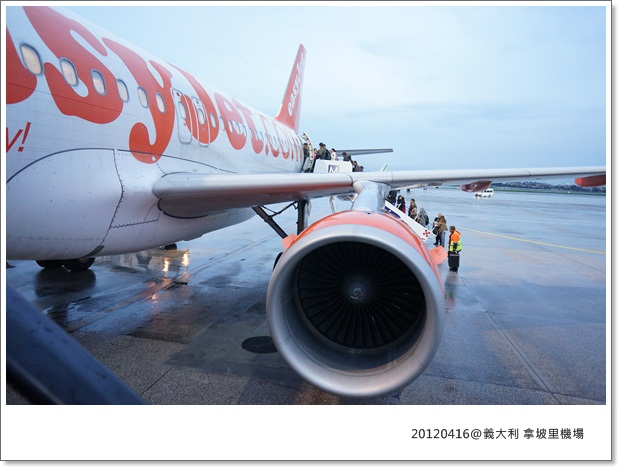
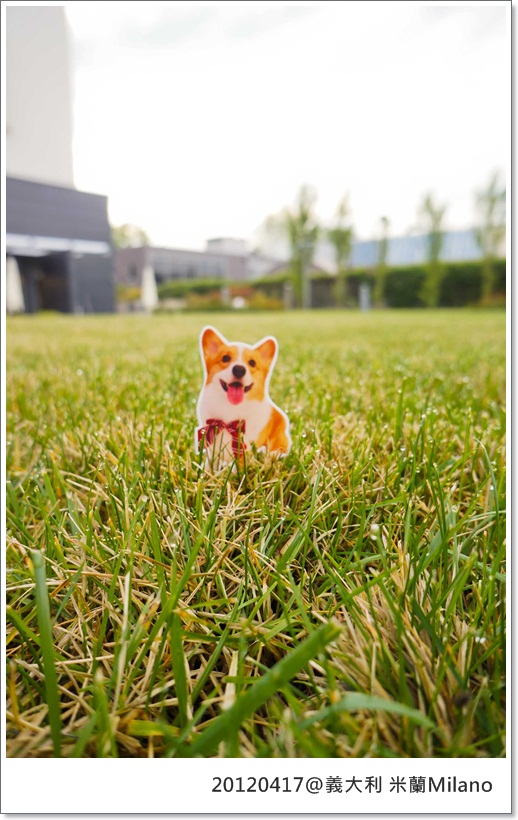
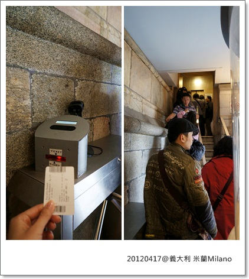
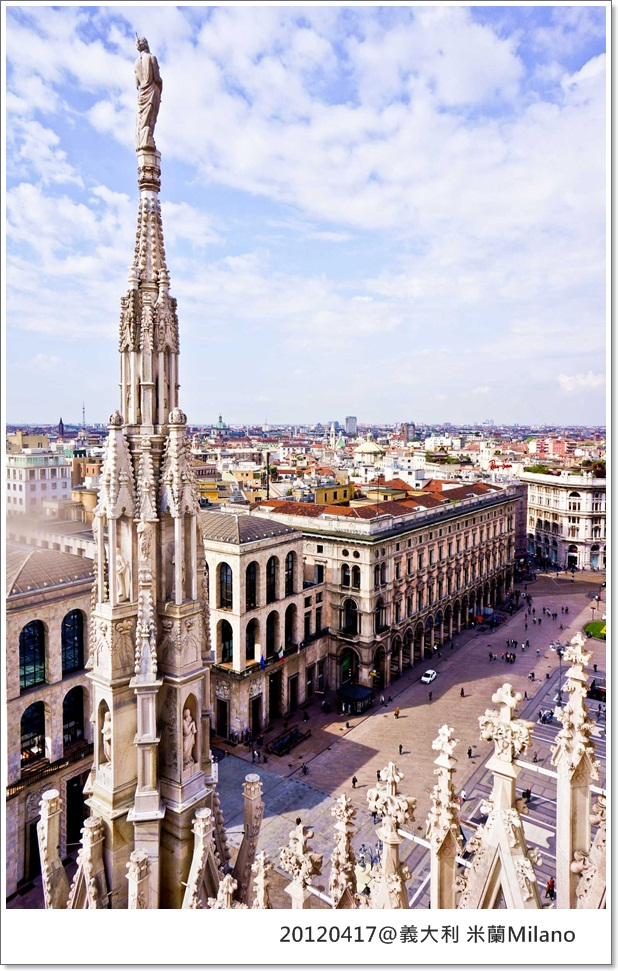
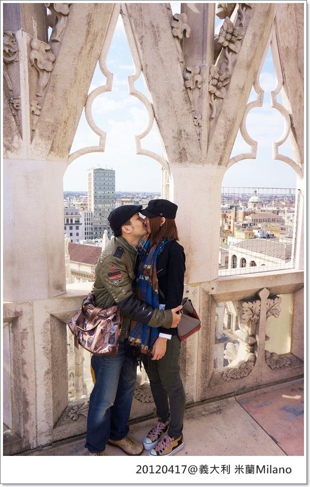
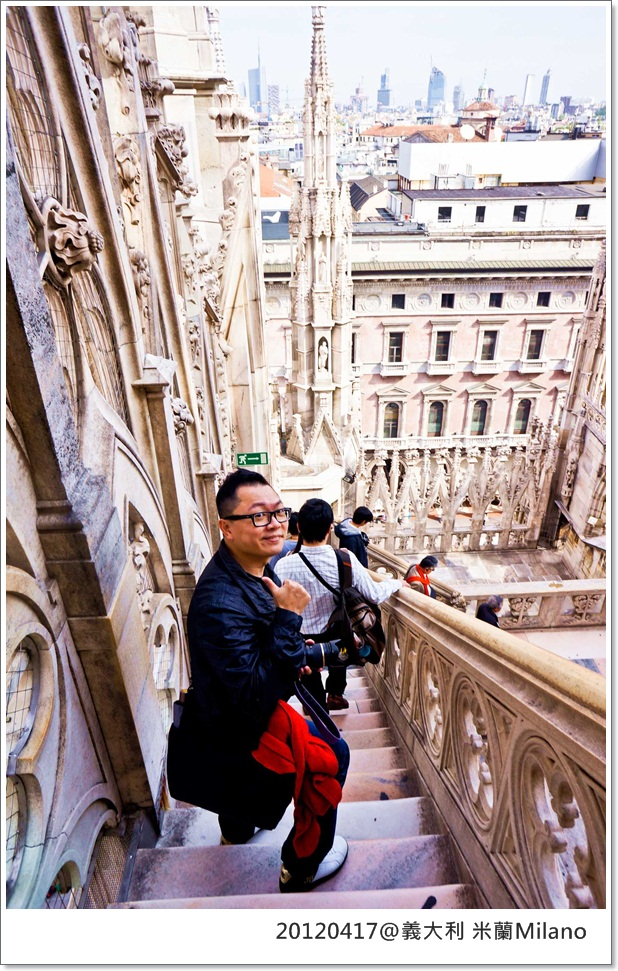

這趟旅行原本是派出500D那傢伙出馬，沒想到它半路遭遇不測......
所以本篇照片都是由我拿小DC拍攝，主角難得都是猛哥
(頭大的人真好！都不用考慮要挑臉小的照片放，因為根本沒有這東西....XDDD)
今天要搭義大利國內航空easyJet飛往米蘭
華友去米蘭的方式有兩種選擇，一是搭國內班機，或是搭夜舖火車
是由前三位報團的人可以共同決定，我只能說好在他們選的是飛機啊！thanks God
雖然火車應該也是個不錯的體驗，但聽了卡內拔講的火車迷昏偷竊真實故事後，就覺得還是算了吧！
根據過往的數據(?)看來，我應該有99.9的機率被迷昏 

晚餐在機場自理，這是拿坡里有名的點心，鹹的口味帶點胡椒香，很好吃

拿坡里飛到米蘭大概1.5hr，到的時候已經晚上9:35，這天都在拉車，還蠻累的！
飯店房間擺設，很舒服的空間
我想老天爺得了不整我會死的病！外面10度以下低溫，但房間內溫度居然是30度，熱死人了......
自己打了電話問櫃台人員怎麼開空調，結果接起來的女士以連珠炮的方式唏哩呼嚕說了一大長串義大利文(?)
所以，我：Excuse me, can you speak English ?
女士: mmmm......I'm .....speak English
我: (拷北!怎麼突然句這麼標準) Oh~~~sorry (高分貝)
接著我跟她隔著電話同時大笑 XDDDDDDDDDDDD （真的太丟臉了!!糗翻）
雖然我的破英文'不怎麼樣，但義大利人說的英文，口音真的很重，聽的我好吃力啊啊啊啊啊啊啊 
只好找老丹來救命，搞很久，結論空調是由中央控制，室外只要溫度夠低就會開暖氣，無法調整.......
為什麼伶祖罵住再高檔的飯店都要開窗睡覺啊!!!(摔筆)
隔天一早，溫ㄤ跟我家500D最後的合影(?)
早起帶阿卡卡去草地跑跑(?) 
 一
前往米蘭大教堂的路上
終於，我踏上了！！！米蘭大教堂 Milan Cathedral
世界上第二大的教堂，雄偉壯觀到整個讓我們倆嘆為觀止，好震撼也好感動！
這天天氣超棒！義大利的天空藍是真的藍，跟台北帶點灰的藍不太一樣，不用偏光鏡就能拍出這麼美的天空！
任何角度拍都可以拍出它的雄偉氣勢
整座教堂是巴洛克建築，1386年開始建造，經歷了五個世紀才建造完成
總共有三千多座雕像，一百三十五個尖塔非常壯觀
全部都是由白色大理石構成，完全無法想像幾世紀前的人怎麼辦到的?
教堂前大廣場
義大利小朋友的戶外教學是去米蘭大教堂！！！！(好羨慕啊~)
我可是花了大把的鈔票才飛到這兒呢
耳機真的很方便，邊聽老丹說故事，也可以隨意走動狂按快門，這偉大藝術品人生中一定要親眼所見啊！
看著猛哥跟教堂合照，我也好想要啊！但我的照片全部沒了，一張都不剩..........
只能說好在還有多帶台小DC，出遠門真的不要嫌麻煩，多一點準備絕對是對的。
這台NEX 5X 拍出來還不錯，在廣角的鏡頭底下的米蘭大教堂更顯壯觀
米蘭大教堂攻頂的門票入手，要搭乘電梯上去前有嚴格的安檢

大家在排隊攻頂，這傢伙還在玩水

穿越樓梯後即將登上米蘭大教堂最高處

到了！！！
攝影師認取景中，早知道500D會離我們而去，就不用這麼認真擺POSE了
拍愈多失去的照片愈多愈讓人傷心啊～只能以這些少少的照片留作回憶，好可惜！
哈哈哈哈哈哈哈哈哈哈哈哈哈哈哈哈
為了拍帥哥，叫猛哥站到旁邊假裝一下，結果.......根本是哈比人闖進巨人的世界嘛！笑屎我了
躺著拍
從教堂最高點往下拍廣場，每個角度看都不同的感動跟驚豔
尖塔頂端有座聖母瑪利亞像，上頭有鍍黃金

芭比跟阿信示範蜜月夫妻拍照守則---> 路人沒閃瞎絕不分開之法式接吻 XD

很抱歉！我們兩個只能走純情(?)路線，就算結了婚也只能牽牽小手，蓋棉被純聊天(?)
(眾:果然結婚是為了詐騙禮金去義大利XD)
準備離開下樓Shopping GO！

一回到地面，立刻敗了一只義大利品牌 Carpisa 小烏龜登機箱，為了待會大開殺戒做準備
米蘭 成功踏上卻留下極少照片留念的城市，究竟許歌琳在米蘭發生了什麼事? 讓我們繼續看下去
捧油們！義大利的高潮快來嘍！
 歐洲冒險 MK義大利蜜月系列
歐洲冒險 MK義大利蜜月系列